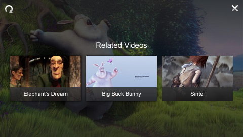

This guide explains the features and options of the Related Videos overlay, built into the Premium and Ads editions of JW6.
The Related Videos functionality for JW Player allows publishers to present an overlay with related videos. When a user clicks one of these videos, JW Player can start playing that video or redirect to the page containing that video.

Users can activate the overlay by clicking the Related Videos button in the top left of the display. Additionally, the overlay can be popped up automatically when a video is completed.
The plugin automatically renders a grid of thumbs, showing a many as fit the screen. There is no way (yet) to render more thumbs. Buttons for re-playing the video and for closing the overlay are shown in the top corners.
The related videos functionality is activated by setting the related configuration block. Inside this block, the following options can be set. The file option is required, all others are optional:
Note you need to use the MEDIAID replacement functionality if you want to display related videos of related videos (see below)
Here is a basic example of the plugin, setting just a file property. See Embedding JW Player for more info on embedding.
jwplayer("container").setup({
file: "/assets/bbb.mp4",
related: {
file: "/assets/bbb-related.xml"
}
});
</script>
Again, note that Related Videos are only available in the Premium and Ads editions of JW Player.
The RSS feed used for loading the related videos is similar to one used to load a playlist. Note the <link> element; this sets the page URL to jump to when clicking a related videos thumbnail:
<rss version="2.0" xmlns:media="http://search.yahoo.com/mrss/">
<channel>
<item>
<title>Big Buck Bunny</title>
<link>http://example.com/watch/28839</link>
<media:thumbnail url="http://example.com/thumbs/28839.jpg"/>
<media:content url="http://example.com/videos/28839.mp4" type="video/mp4" />
</item>
<item>
<title>Elephant's Dream</title>
<link>http://example.com/watch/8791</link>
<media:thumbnail url="http://example.com/thumbs/8791.jpg"/>
<media:content url="http://example.com/videos/8791.mp4" type="video/mp4" />
</item>
</channel>
</rss>
If an item in the RSS feed does not contain the title> and media:thumbnail elements, it is not displayed in the related videos overlay. If the onclick option is set to link, the link element is also required. If onclick is set to play, the media:content element is also required.
If no correct items are found in an RSS feed (or if the feed is empty), a No related videos found text is displayed instead of the grid of thumbnails.
The Media ID Replacement feature allows JW Player to dynamically construct the URL to related videos RSS feeds. This is required in 2 situations:
Here is an example embed using a simple playlist with 2 items:
jwplayer("container").setup({
playlist: [{
file: "/videos/12345.mp4",
mediaid: "12345"
},{
file: "/videos/67890.mp4",
mediaid: "67890"
}],
related: {
file: "/related/MEDIAID.xml"
}
});
For the first item in the playlist, JW Player will request the RSS feed /related/12345.xml. For the second item, JW Player will request the feed /related/67890.xml.
If the items in these RSS feeds in turn also contain a mediaid (using the guid element), JW Player is able to in turn construct a related videos URL and display related videos of these related videos:
<rss version="2.0" xmlns:media="http://search.yahoo.com/mrss/">
<channel>
<item>
<title>Big Buck Bunny</title>
<guid isPermalink="false">28839</guid>
<media:thumbnail url="http://example.com/thumbs/28839.jpg"/>
<media:content url="http://example.com/videos/28839.mp4" type="video/mp4" />
</item>
<item>
<title>Elephant's Dream</title>
<guid isPermalink="false">8791</guid>
<media:thumbnail url="http://example.com/thumbs/8791.jpg"/>
<media:content url="http://example.com/videos/8791.mp4" type="video/mp4" />
</item>
</channel>
</rss>
See Loading RSS feeds for more info on the various elements a feed can contain.